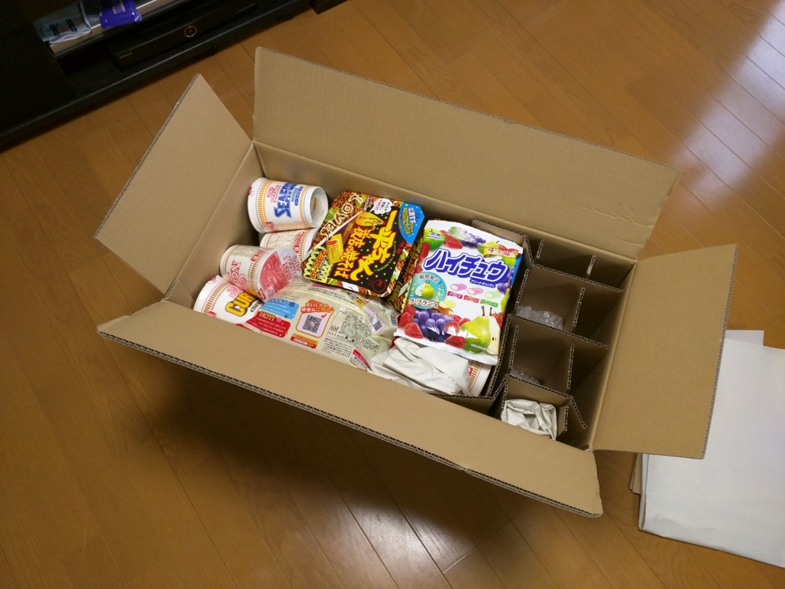

Amazon パントリー使ってみた――むかし母ちゃんが一人暮らしの俺に送ってくれた救援物資を思い出して涙
公開日：
やってみようかなーと思ってつい後回しになってたけど、カップラーメン（粉末袋の中身が真っ赤っかで頭おかしい「番長花道辛味噌ラーメン」が12個送られてきた。 - だるろぐ）を食べつくしたのを機に、“Amazon パントリー”を試してみることにした。
なにがお得なのか一見よくわかんないサービスだけど、
- いろんな種類の商品を一つの箱に詰めてまとめて買える（送料は290円）
- なので、受け取りも一回で済む
- まとめ買いでしか対応していない商品も一つから買える
というのがポイントらしい。インスタントラーメンを買うとき、Amazon だと1個セットなんかでしか売ってないんだよね（プライムじゃなければ、そういうセットもあるのだけど、送料かかるから近所のスーパーで買った方がいい）。でも、パントリーならいろんなものを詰め合わせて買うことができるってわけやね。
ちなみに“Amazon プライム”に入っていないと使えないので注意。

使い方は最初よくわからなかったが、“Amazon パントリー”対応の商品を検索してカートに入れると――

箱に入っていく感じらしい。貧乏性なのでついギッチギチに詰めてやろうと思うが、意外になかなか埋まらない。ついには買うものがなくなってしまい、
- ケチャップ切らしてたし、ぶちこんどこ
- お鍋の季節やし、ポン酢あったほうがいいな
- そういえばインスタントコーヒーなかったかも
- まだ隙間空いてるし、とりあえずビール6本いれとこ
などと、余計なものまで買ってしまった。箱いっぱいに詰めて、6,000円程度。占有率あたりの単価が高いビールを抜けば、だいたい5,000円ぐらい詰められる感じかなぁ。

待つこと2日で到着。思ったよりも箱がデカく、クロネコヤマトのお兄さんには申し訳なく思う。

開けてみた。大学に通って一人暮らししてるとき、月末になるとおかんがこういうのを送ってくれたなぁー。米とかカップ麺とかレトルト食品とか、あと、あからさまにお中元かお歳暮でもらった感じのゼリーセットとか、「どうせロクなもんくってねーだろ、たまには帰ってこい」などと書いた手紙とか入ってて。ありがたいもんやな。思い出すだけでちょっと涙出るわ。
それに、今回のパントリーは母ちゃんの救援物資よりもも豪華。“ジオンはあと10年戦える”みたいな謎の心強さがある。実際、自分はそんなにカップ麺食べないから、これだけあれば年内は十分もちそう。
とにかく、使ってみた感想としては――
- 割と楽しいかも。自分で作る“救援物資”みたいな。
- お得かどうかは他と比較したことないからわからん。見た感じとくに損した感じはしないけど
- どれがパントリー対応商品なのかよくわからん。パントリー対応商品だけのストアサイトとかあればいいのにな
みたいな感じ。面白かったし、実用的でもあるので、たぶんまた使うような気がする。